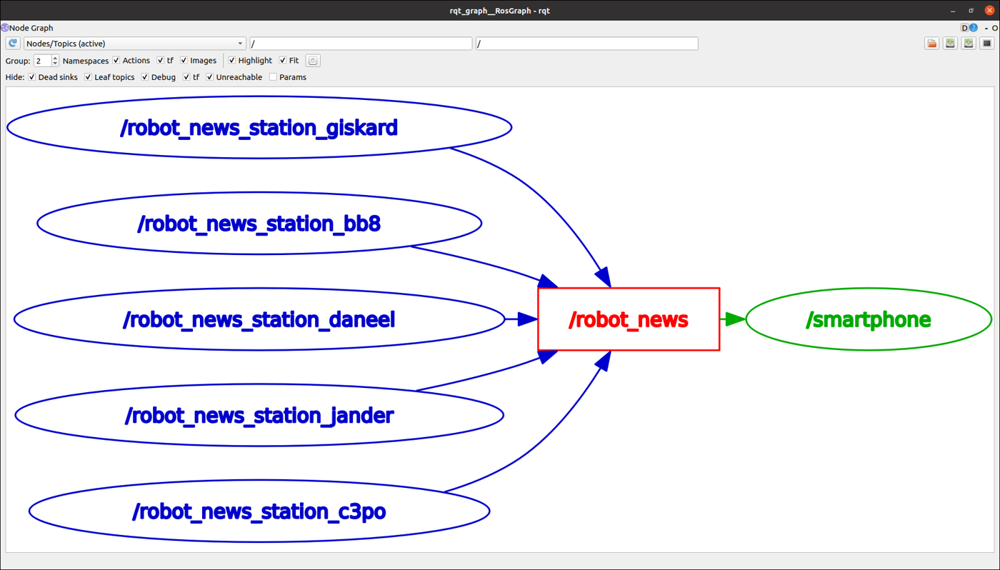

Launch Files + Project: Catch Them All
- Create a bringup package and start several nodes with one
ros2 launchcommand. - Rename nodes, remap topics and set parameters inside a launch file.
- Design a multi-node system with topics, services, custom interfaces and parameters.
- Write a go-to-goal controller and build the complete Catch Them All game.
- Record and replay topic data with
ros2 bag.
↺Recap: Lectures 2–5 in one table
Today's project uses all of these. Read each row and say where you used it.
| Lecture | Key idea | Code to remember | Used in the project |
|---|---|---|---|
| 2 · Nodes | A program; a timer runs code at a steady rate | class MyNode(Node)create_timer(0.01, cb) | controller, spawner |
| 3 · Topics | A stream of data: publish / subscribe | create_publisher(…)create_subscription(…) | pose, cmd_vel, alive_turtles |
| 4 · Services | Request → response | create_service(…)call_async(req) | spawn, kill, catch_turtle |
| 5 · Interfaces | Your own .msg / .srv | msg/Turtle.msgsrv/CatchTurtle.srv | Turtle, TurtleArray, CatchTurtle |
| 5 · Parameters | Settings without editing code | declare_parameter(…)get_parameter(…).value | spawn_frequency, turtle_name_prefix |
| 6 · Launch | Start everything with one command | ros2 launch pkg file.launch.py | the whole game |
💡What is a launch file? A self-driving car example
A self-driving car runs many programs at the same time. In ROS 2, each one is a node, the nodes talk through topics, and one launch file starts them all (Fig. 1).
- Without a launch file: one terminal per node, each with its own
ros2 run … --ros-args …. Six nodes = six terminals, six long commands, and one typo can stop the car from working. - With a launch file: one Python file lists every node with its name, topic connections and parameters. One command starts the whole car; Ctrl+C stops all of it.
A launch file is the car's start button: write it once, then start the same system every time, on any computer.
A simple launch file for the car
This is what car.launch.py from Fig. 1 looks like. Read it top to bottom: it is only a list of nodes to start.
# 1. Two imports, in every launch file
from launch import LaunchDescription
from launch_ros.actions import Node
# 2. ros2 launch calls this function
def generate_launch_description():
ld = LaunchDescription() # the list of things to start
# 3. One Node(...) = one "ros2 run package executable"
# sensors
lidar_node = Node(package="car_sensors", executable="lidar_driver")
camera_node = Node(package="car_sensors", executable="camera_driver")
gps_node = Node(package="car_sensors", executable="gps_driver")
# software
perception_node = Node(package="car_autonomy", executable="perception")
planner_node = Node(package="car_autonomy", executable="planner",
parameters=[{"max_speed": 13.9}]) # 50 km/h
controller_node = Node(package="car_autonomy", executable="controller")
# 4. Add every node to the list
ld.add_action(lidar_node)
ld.add_action(camera_node)
ld.add_action(gps_node)
ld.add_action(perception_node)
ld.add_action(planner_node)
ld.add_action(controller_node)
# 5. Return the list: ros2 launch starts everything in it
return ldros2 launch car_bringup car.launch.py| Part | Meaning |
|---|---|
generate_launch_description() | the function ros2 launch calls |
Node(package=…, executable=…) | one node = one ros2 run package executable |
parameters=[{…}] | the node's settings, like -p max_speed:=13.9 |
ld.add_action(…) | add the node to the list to start |
This car package is an example to show the idea. In 6.1 you write a real launch file for your own nodes, step by step.
6.1Scale your Application with ROS2 Launch Files
Running all the nodes of an application, each in its own terminal with its own settings, quickly becomes difficult (Fig. 2). A launch file starts all of them with one command (Fig. 3).


🚗 Real examples of one-command start-up:
ros2 launch autoware_launch autoware.launch.xml- starts sensing, perception, planning and control
ros2 launch limo_gazebosim limo_gazebo_diff.launch.py- one command: Gazebo + robot + sensors
my_robot_bringup + number_app.launch.py
Goal: one command starts number_publisher and number_counter (Lectures 3–4).
cd ~/ros2_ws/src
ros2 pkg create my_robot_bringup
cd my_robot_bringup/
rm -rf include/ src/
mkdir launchA bringup package holds launch files only, so we remove include/ and src/.
cmake_minimum_required(VERSION 3.5)
project(my_robot_bringup)
# find dependencies
find_package(ament_cmake REQUIRED)
install(DIRECTORY
launch
DESTINATION share/${PROJECT_NAME}
)
ament_package()cd ~/ros2_ws/src/my_robot_bringup/launch
touch number_app.launch.py
chmod +x number_app.launch.pyfrom launch import LaunchDescription
def generate_launch_description():
ld = LaunchDescription()
return ldcd ~/ros2_ws/
colcon build --packages-select my_robot_bringup --symlink-install
source ~/.bashrc
ros2 launch my_robot_bringup number_app.launch.pyIt runs and starts nothing yet: ros2 launch calls generate_launch_description() and starts what it returns.
from launch import LaunchDescription
from launch_ros.actions import Node
def generate_launch_description():
ld = LaunchDescription()
number_publisher_node = Node(
package="my_py_pkg",
executable="number_publisher"
)
number_counter_node = Node(
package="my_py_pkg",
executable="number_counter"
)
ld.add_action(number_publisher_node)
ld.add_action(number_counter_node)
return ldOne Node(…) = one ros2 run my_py_pkg …. Nothing starts until you add_action it.
<exec_depend>my_py_pkg</exec_depend>cd ~/ros2_ws/
colcon build --packages-select my_robot_bringup --symlink-install
ros2 launch my_robot_bringup number_app.launch.py[INFO] [number_publisher-1]: process started with pid [5120] [INFO] [number_counter-2]: process started with pid [5122]
ros2 node list/number_counter /number_publisher
With --symlink-install, editing a launch file needs no rebuild. A new launch file needs one build.
6.2Configure your Nodes in a Launch File
Here you learn how to rename nodes, remap topics/services and set parameters: everything you typed after --ros-args, now written once in the file.
-r __node:=my_number_publishername="my_number_publisher"-r number:=my_numberremappings=[("number", "my_number")]-p number_to_publish:=4parameters=[{"number_to_publish": 4}]Rename, remap and set parameters
from launch import LaunchDescription
from launch_ros.actions import Node
def generate_launch_description():
ld = LaunchDescription()
remap_number_topic = ("number", "my_number")
number_publisher_node = Node(
package="my_py_pkg",
executable="number_publisher",
# rename the node
name="my_number_publisher",
# remap the topics/services
remappings=[
remap_number_topic
],
# add parameters
parameters=[
{"number_to_publish": 4},
{"publish_frequency": 5.0}
]
)
number_counter_node = Node(
package="my_py_pkg",
executable="number_counter",
# rename the node
name="my_number_counter",
# remap the topics/services
remappings=[
remap_number_topic,
("number_count", "my_number_count")
]
)
ld.add_action(number_publisher_node)
ld.add_action(number_counter_node)
return ldBoth nodes use the same remap_number_topic: if only one node is remapped, they stop talking to each other.
ros2 launch my_robot_bringup number_app.launch.pyros2 node list
ros2 topic list
ros2 topic echo /my_number_count
ros2 topic hz /my_number_count/my_number_counter /my_number_publisher ... /my_number /my_number_count ... average rate: 5.000
6.3Activity: Launch File
radio.launch.py: 5 robot news stations + 1 smartphone

Goal: start 5 robot_news_station nodes and 1 smartphone node. Each station needs a different name and publishes "Hi, this is <robot_name> from the Robot News Station!". The smartphone receives all the messages. Robot names: Giskard, BB8, Daneel, Jander, C3PO.
No node needs to be created or changed: you only write one launch file that starts the renamed nodes with parameters.
cd ~/ros2_ws/src/my_robot_bringup/launch
touch radio.launch.py
chmod +x radio.launch.pyHint
for loop. Node name: "robot_news_station_" + name.lower(); parameter: {"robot_name": name}.Solution
from launch import LaunchDescription
from launch_ros.actions import Node
def generate_launch_description():
ld = LaunchDescription()
robot_names = ["Giskard", "BB8", "Daneel", "Jander", "C3PO"]
robot_news_station_nodes = []
for name in robot_names:
robot_news_station_nodes.append(Node(
package="my_py_pkg",
executable="robot_news_station",
name="robot_news_station_" + name.lower(),
parameters=[{"robot_name": name}]
))
smartphone_node = Node(
package="my_py_pkg",
executable="smartphone",
)
for node in robot_news_station_nodes:
ld.add_action(node)
ld.add_action(smartphone_node)
return ldcd ~/ros2_ws/
colcon build --packages-select my_robot_bringup --symlink-install
ros2 launch my_robot_bringup radio.launch.py
ros2 node list
ros2 topic list
rqt_graph✅ Launch files done. Next: you combine everything from Lectures 2–6 in one project.
6.4Complete Project with Turtlesim: Catch Them All
We use turtlesim as the simulator so we can see what the robot is doing. The master turtle, turtle1, drives by itself to other turtles that appear at random places, and catches them one after another.
| 🐢 Catch Them All | 🚕 Robotaxi | 🤖 LIMO (Lecture 8) | |
|---|---|---|---|
| Sense: where am I? | /turtle1/pose | GPS + LiDAR | /odom |
| Sense: what's out there? | /alive_turtles | ride requests | a goal you choose |
| Think: which first? | nearest turtle | nearest passenger | one goal at a time |
| Act | Twist on cmd_vel | steering, throttle, brake | Twist on /cmd_vel |
The system you will build
The go-to-goal maths used by the controller
Speed is proportional to the distance, turning is proportional to the angle error: a P-controller. diff is wrapped into [−π, π] so the turtle always turns the short way. Try it in the browser:
Look at turtlesim first
ros2 run turtlesim turtlesim_noderos2 topic list
ros2 topic echo /turtle1/pose
ros2 topic info /turtle1/pose
ros2 interface show turtlesim/msg/Pose
ros2 topic info /turtle1/cmd_vel
ros2 interface show geometry_msgs/msg/Twist6.5turtle_controller
Drive turtle1 to a fixed target (8, 4)
cd ~/ros2_ws/src
ros2 pkg create turtlesim_catch_them_all --build-type ament_python
cd turtlesim_catch_them_all/turtlesim_catch_them_all
touch turtle_controller.py
chmod +x turtle_controller.py#!/usr/bin/env python3
import math
import rclpy
from rclpy.node import Node
from turtlesim.msg import Pose
from geometry_msgs.msg import Twist
class TurtleControllerNode(Node):
def __init__(self):
super().__init__("turtle_controller")
self.target_x = 8.0
self.target_y = 4.0
self.pose_ = None
self.cmd_vel_publisher_ = self.create_publisher(
Twist, "turtle1/cmd_vel", 10)
self.pose_subscriber_ = self.create_subscription(
Pose, "turtle1/pose", self.callback_turtle_pose, 10)
self.control_loop_timer_ = self.create_timer(0.01, self.control_loop)
def callback_turtle_pose(self, msg):
self.pose_ = msg
def control_loop(self):
if self.pose_ == None:
return
dist_x = self.target_x - self.pose_.x
dist_y = self.target_y - self.pose_.y
distance = math.sqrt(dist_x * dist_x + dist_y * dist_y)
msg = Twist()
if distance > 0.5:
# position
msg.linear.x = 2*distance
# orientation
goal_theta = math.atan2(dist_y, dist_x)
diff = goal_theta - self.pose_.theta
if diff > math.pi:
diff -= 2*math.pi
elif diff < -math.pi:
diff += 2*math.pi
msg.angular.z = 6*diff
else:
# target reached!
msg.linear.x = 0.0
msg.angular.z = 0.0
self.cmd_vel_publisher_.publish(msg)
def main(args=None):
rclpy.init(args=args)
node = TurtleControllerNode()
rclpy.spin(node)
rclpy.shutdown()
if __name__ == "__main__":
main()The pose callback only saves the latest pose; the 100 Hz timer makes the decision. You reuse exactly this pattern on the LIMO with /odom.
"turtlesim_controller = turtlesim_catch_them_all.turtle_controller:main",<depend>rclpy</depend>
<depend>turtlesim</depend>
<depend>geometry_msgs</depend>cd ~/ros2_ws/ && colcon build --packages-select turtlesim_catch_them_all --symlink-install && source ~/.bashrc
ros2 run turtlesim turtlesim_node
ros2 run turtlesim_catch_them_all turtlesim_controller✅ turtle1 turns, drives to (8, 4) and stops.
6.6turtle_spawner
Spawn a new turtle every 2 seconds
ros2 run turtlesim turtlesim_node
ros2 service list
ros2 service type /spawn
ros2 interface show turtlesim/srv/Spawncd ~/ros2_ws/src/turtlesim_catch_them_all/turtlesim_catch_them_all
touch turtle_spawner.py
chmod +x turtle_spawner.py#!/usr/bin/env python3
from functools import partial
import random
import math
import rclpy
from rclpy.node import Node
from turtlesim.srv import Spawn
class TurtleSpawner(Node):
def __init__(self):
super().__init__("turtle_spawner")
self.turtle_name_prefix_ = "turtle"
self.turtle_counter_ = 1 # turtle1 already exists
self.spawn_client_ = self.create_client(Spawn, "spawn")
self.spawn_turtle_timer_ = self.create_timer(2.0, self.spawn_new_turtle)
def spawn_new_turtle(self):
self.turtle_counter_ += 1
name = self.turtle_name_prefix_ + str(self.turtle_counter_)
x = random.uniform(0.0, 11.0)
y = random.uniform(0.0, 11.0)
theta = random.uniform(0.0, 2*math.pi)
self.call_spawn_server(name, x, y, theta)
def call_spawn_server(self, turtle_name, x, y, theta):
while not self.spawn_client_.wait_for_service(1.0):
self.get_logger().warn("Waiting for Server ...")
request = Spawn.Request()
request.x = x
request.y = y
request.theta = theta
request.name = turtle_name
future = self.spawn_client_.call_async(request)
future.add_done_callback(
partial(self.callback_call_spawn, turtle_name=turtle_name, x=x, y=y, theta=theta))
def callback_call_spawn(self, future, turtle_name, x, y, theta):
try:
response = future.result()
if response.name != "":
self.get_logger().info("Turtle " + response.name + " is now alive")
except Exception as e:
self.get_logger().error("Service call failed %r" % (e,))
def main(args=None):
rclpy.init(args=args)
node = TurtleSpawner()
rclpy.spin(node)
rclpy.shutdown()
if __name__ == "__main__":
main()partial passes x, y, theta to the callback, because the response only contains the name. You need the position in the next step.
"turtle_spawner = turtlesim_catch_them_all.turtle_spawner:main",cd ~/ros2_ws/ && colcon build --packages-select turtlesim_catch_them_all --symlink-install && source ~/.bashrc
ros2 run turtlesim_catch_them_all turtle_spawner[INFO] [...] [turtle_spawner]: Turtle turtle2 is now alive [INFO] [...] [turtle_spawner]: Turtle turtle3 is now alive
6.7Actual Catch of the First Turtle
Share the list of alive turtles with custom messages
cd ~/ros2_ws/src/my_robot_interfaces/msg
touch Turtle.msg
touch TurtleArray.msgstring name
float64 x
float64 y
float64 thetaTurtle[] turtles "msg/Turtle.msg"
"msg/TurtleArray.msg"cd ~/ros2_ws/ && colcon build --packages-select my_robot_interfaces && source ~/.bashrc
ros2 interface show my_robot_interfaces/msg/Turtle
ros2 interface show my_robot_interfaces/msg/TurtleArrayAdd <depend>my_robot_interfaces</depend> to the package.xml of turtlesim_catch_them_all.
#!/usr/bin/env python3
import math
import rclpy
from rclpy.node import Node
from turtlesim.msg import Pose
from geometry_msgs.msg import Twist
from my_robot_interfaces.msg import Turtle
from my_robot_interfaces.msg import TurtleArray
class TurtleControllerNode(Node):
def __init__(self):
super().__init__("turtle_controller")
self.turtle_to_catch_ = None
self.pose_ = None
self.cmd_vel_publisher_ = self.create_publisher(
Twist, "turtle1/cmd_vel", 10)
self.pose_subscriber_ = self.create_subscription(
Pose, "turtle1/pose", self.callback_turtle_pose, 10)
self.alive_turtles_subscriber_ = self.create_subscription(
TurtleArray, "alive_turtles", self.callback_alive_turtles, 10)
self.control_loop_timer_ = self.create_timer(0.01, self.control_loop)
def callback_turtle_pose(self, msg):
self.pose_ = msg
def callback_alive_turtles(self, msg):
if len(msg.turtles) > 0:
self.turtle_to_catch_ = msg.turtles[0]
def control_loop(self):
if self.pose_ == None or self.turtle_to_catch_ == None:
return
dist_x = self.turtle_to_catch_.x - self.pose_.x
dist_y = self.turtle_to_catch_.y - self.pose_.y
distance = math.sqrt(dist_x * dist_x + dist_y * dist_y)
msg = Twist()
if distance > 0.5:
# position
msg.linear.x = 2*distance
# orientation
goal_theta = math.atan2(dist_y, dist_x)
diff = goal_theta - self.pose_.theta
if diff > math.pi:
diff -= 2*math.pi
elif diff < -math.pi:
diff += 2*math.pi
msg.angular.z = 6*diff
else:
# target reached!
msg.linear.x = 0.0
msg.angular.z = 0.0
self.cmd_vel_publisher_.publish(msg)
def main(args=None):
rclpy.init(args=args)
node = TurtleControllerNode()
rclpy.spin(node)
rclpy.shutdown()
if __name__ == "__main__":
main()#!/usr/bin/env python3
from functools import partial
import random
import math
import rclpy
from rclpy.node import Node
from turtlesim.srv import Spawn
from my_robot_interfaces.msg import Turtle
from my_robot_interfaces.msg import TurtleArray
class TurtleSpawner(Node):
def __init__(self):
super().__init__("turtle_spawner")
self.turtle_name_prefix_ = "turtle"
self.turtle_counter_ = 1 # turtle1 already exists
self.alive_turtles_ = []
self.alive_turtles_publisher_ = self.create_publisher(
TurtleArray, "alive_turtles", 10)
self.spawn_client_ = self.create_client(Spawn, "spawn")
self.spawn_turtle_timer_ = self.create_timer(
2.0, self.spawn_new_turtle)
def publish_alive_turtles(self):
msg = TurtleArray()
msg.turtles = self.alive_turtles_
self.alive_turtles_publisher_.publish(msg)
def spawn_new_turtle(self):
self.turtle_counter_ += 1
name = self.turtle_name_prefix_ + str(self.turtle_counter_)
x = random.uniform(0.0, 11.0)
y = random.uniform(0.0, 11.0)
theta = random.uniform(0.0, 2*math.pi)
self.call_spawn_server(name, x, y, theta)
def call_spawn_server(self, turtle_name, x, y, theta):
while not self.spawn_client_.wait_for_service(1.0):
self.get_logger().warn("Waiting for Server...")
request = Spawn.Request()
request.x = x
request.y = y
request.theta = theta
request.name = turtle_name
future = self.spawn_client_.call_async(request)
future.add_done_callback(
partial(self.callback_call_spawn, turtle_name=turtle_name, x=x, y=y, theta=theta))
def callback_call_spawn(self, future, turtle_name, x, y, theta):
try:
response = future.result()
if response.name != "":
self.get_logger().info("Turtle " + response.name + " is now alive")
new_turtle = Turtle()
new_turtle.name = response.name
new_turtle.x = x
new_turtle.y = y
new_turtle.theta = theta
self.alive_turtles_.append(new_turtle)
self.publish_alive_turtles()
except Exception as e:
self.get_logger().error("Service call failed %r" % (e,))
def main(args=None):
rclpy.init(args=args)
node = TurtleSpawner()
rclpy.spin(node)
rclpy.shutdown()
if __name__ == "__main__":
main()cd ~/ros2_ws/ && colcon build --symlink-install && source ~/.bashrc
ros2 run turtlesim turtlesim_node
ros2 run turtlesim_catch_them_all turtlesim_controller
ros2 run turtlesim_catch_them_all turtle_spawner✅ turtle1 drives to the first spawned turtle and stops on it. It is not caught yet.
6.8Actual Catch of All Turtles
The /catch_turtle service and turtlesim's /kill
cd ~/ros2_ws/src/my_robot_interfaces/srv
touch CatchTurtle.srvstring name
---
bool success "srv/CatchTurtle.srv"cd ~/ros2_ws/ && colcon build --packages-select my_robot_interfaces && source ~/.bashrc
ros2 service type /kill
ros2 interface show turtlesim/srv/Kill#!/usr/bin/env python3
from functools import partial
import random
import math
import rclpy
from rclpy.node import Node
from turtlesim.srv import Spawn
from turtlesim.srv import Kill
from my_robot_interfaces.msg import Turtle
from my_robot_interfaces.msg import TurtleArray
from my_robot_interfaces.srv import CatchTurtle
class TurtleSpawner(Node):
def __init__(self):
super().__init__("turtle_spawner")
self.turtle_name_prefix_ = "turtle"
self.turtle_counter_ = 1 # turtle1 already exists
self.alive_turtles_ = []
self.alive_turtles_publisher_ = self.create_publisher(
TurtleArray, "alive_turtles", 10)
self.spawn_client_ = self.create_client(Spawn, "spawn")
self.kill_client_ = self.create_client(Kill, "kill")
self.spawn_turtle_timer_ = self.create_timer(
2.0, self.spawn_new_turtle)
self.catch_turtle_service_ = self.create_service(
CatchTurtle, "catch_turtle", self.callback_catch_turtle)
def callback_catch_turtle(self, request, response):
self.call_kill_server(request.name)
response.success = True
return response
def publish_alive_turtles(self):
msg = TurtleArray()
msg.turtles = self.alive_turtles_
self.alive_turtles_publisher_.publish(msg)
def spawn_new_turtle(self):
self.turtle_counter_ += 1
name = self.turtle_name_prefix_ + str(self.turtle_counter_)
x = random.uniform(0.0, 11.0)
y = random.uniform(0.0, 11.0)
theta = random.uniform(0.0, 2*math.pi)
self.call_spawn_server(name, x, y, theta)
def call_spawn_server(self, turtle_name, x, y, theta):
while not self.spawn_client_.wait_for_service(1.0):
self.get_logger().warn("Waiting for Server...")
request = Spawn.Request()
request.x = x
request.y = y
request.theta = theta
request.name = turtle_name
future = self.spawn_client_.call_async(request)
future.add_done_callback(
partial(self.callback_call_spawn, turtle_name=turtle_name, x=x, y=y, theta=theta))
def callback_call_spawn(self, future, turtle_name, x, y, theta):
try:
response = future.result()
if response.name != "":
self.get_logger().info("Turtle " + response.name + " is now alive")
new_turtle = Turtle()
new_turtle.name = response.name
new_turtle.x = x
new_turtle.y = y
new_turtle.theta = theta
self.alive_turtles_.append(new_turtle)
self.publish_alive_turtles()
except Exception as e:
self.get_logger().error("Service call failed %r" % (e,))
def call_kill_server(self, turtle_name):
while not self.kill_client_.wait_for_service(1.0):
self.get_logger().warn("Waiting for Server...")
request = Kill.Request()
request.name = turtle_name
future = self.kill_client_.call_async(request)
future.add_done_callback(
partial(self.callback_call_kill, turtle_name=turtle_name))
def callback_call_kill(self, future, turtle_name):
try:
future.result()
for (i, turtle) in enumerate(self.alive_turtles_):
if turtle.name == turtle_name:
del self.alive_turtles_[i]
self.publish_alive_turtles()
break
except Exception as e:
self.get_logger().error("Service call failed %r" % (e,))
def main(args=None):
rclpy.init(args=args)
node = TurtleSpawner()
rclpy.spin(node)
rclpy.shutdown()
if __name__ == "__main__":
main()The spawner owns the list of alive turtles, so only the spawner calls /kill and removes turtles from the list. The controller only asks through /catch_turtle.
#!/usr/bin/env python3
from functools import partial
import math
import rclpy
from rclpy.node import Node
from turtlesim.msg import Pose
from geometry_msgs.msg import Twist
from my_robot_interfaces.msg import Turtle
from my_robot_interfaces.msg import TurtleArray
from my_robot_interfaces.srv import CatchTurtle
class TurtleControllerNode(Node):
def __init__(self):
super().__init__("turtle_controller")
self.turtle_to_catch_ = None
self.pose_ = None
self.cmd_vel_publisher_ = self.create_publisher(
Twist, "turtle1/cmd_vel", 10)
self.pose_subscriber_ = self.create_subscription(
Pose, "turtle1/pose", self.callback_turtle_pose, 10)
self.alive_turtles_subscriber_ = self.create_subscription(
TurtleArray, "alive_turtles", self.callback_alive_turtles, 10)
self.catch_turtle_client_ = self.create_client(CatchTurtle, "catch_turtle")
self.control_loop_timer_ = self.create_timer(0.01, self.control_loop)
def callback_turtle_pose(self, msg):
self.pose_ = msg
def callback_alive_turtles(self, msg):
if len(msg.turtles) > 0:
self.turtle_to_catch_ = msg.turtles[0]
def control_loop(self):
if self.pose_ == None or self.turtle_to_catch_ == None:
return
dist_x = self.turtle_to_catch_.x - self.pose_.x
dist_y = self.turtle_to_catch_.y - self.pose_.y
distance = math.sqrt(dist_x * dist_x + dist_y * dist_y)
msg = Twist()
if distance > 0.5:
# position
msg.linear.x = 2*distance
# orientation
goal_theta = math.atan2(dist_y, dist_x)
diff = goal_theta - self.pose_.theta
if diff > math.pi:
diff -= 2*math.pi
elif diff < -math.pi:
diff += 2*math.pi
msg.angular.z = 6*diff
else:
# target reached!
msg.linear.x = 0.0
msg.angular.z = 0.0
self.call_catch_turtle_server(self.turtle_to_catch_.name)
self.turtle_to_catch_ = None
self.cmd_vel_publisher_.publish(msg)
def call_catch_turtle_server(self, turtle_name):
while not self.catch_turtle_client_.wait_for_service(1.0):
self.get_logger().warn("Waiting for Server...")
request = CatchTurtle.Request()
request.name = turtle_name
future = self.catch_turtle_client_.call_async(request)
future.add_done_callback(
partial(self.callback_call_catch_turtle, turtle_name=turtle_name))
def callback_call_catch_turtle(self, future, turtle_name):
try:
response = future.result()
if not response.success:
self.get_logger().error("Turtle " + str(turtle_name) + " could not be caught")
except Exception as e:
self.get_logger().error("Service call failed %r" % (e,))
def main(args=None):
rclpy.init(args=args)
node = TurtleControllerNode()
rclpy.spin(node)
rclpy.shutdown()
if __name__ == "__main__":
main()cd ~/ros2_ws/ && colcon build --symlink-install && source ~/.bashrc
ros2 run turtlesim turtlesim_node
ros2 run turtlesim_catch_them_all turtlesim_controller
ros2 run turtlesim_catch_them_all turtle_spawner✅ turtle1 catches each turtle and moves on to the next one. Open rqt_graph and compare it with the system diagram in 6.4.
6.9Catch the Nearest Turtle
Chase the closest turtle, not the first one
In turtle_spawner.py, change the spawn timer from 2.0 to 1.0 second. In turtle_controller.py, add the switch in __init__ and replace callback_alive_turtles:
def __init__(self):
super().__init__("turtle_controller")
self.turtle_to_catch_ = None
self.catch_closest_turtle_first_ = True
...
def callback_alive_turtles(self, msg):
if len(msg.turtles) > 0 and self.pose_ != None:
if self.catch_closest_turtle_first_:
closest_turtle = None
closest_turtle_distance = None
for turtle in msg.turtles:
dist_x = turtle.x - self.pose_.x
dist_y = turtle.y - self.pose_.y
distance = math.sqrt(dist_x * dist_x + dist_y * dist_y)
if closest_turtle == None or distance < closest_turtle_distance:
closest_turtle = turtle
closest_turtle_distance = distance
self.turtle_to_catch_ = closest_turtle
else:
self.turtle_to_catch_ = msg.turtles[0]✅ Run the 3 terminals again: turtle1 now goes to the nearest turtle and catches more turtles per minute. 🚕 A robotaxi dispatcher makes the same choice: the nearest passenger first.
6.10Parameters and Launch File
Start the whole game with one command
self.declare_parameter("catch_closest_turtle_first", True)
self.catch_closest_turtle_first_ = self.get_parameter("catch_closest_turtle_first").value self.declare_parameter("spawn_frequency", 1.0)
self.declare_parameter("turtle_name_prefix", "turtle")
self.spawn_frequency_ = self.get_parameter("spawn_frequency").value
self.turtle_name_prefix_ = self.get_parameter("turtle_name_prefix").value
...
self.spawn_turtle_timer_ = self.create_timer(
1.0/self.spawn_frequency_, self.spawn_new_turtle)cd ~/ros2_ws/src/my_robot_bringup/launch
touch turtlesim_catch_them_all.launch.py
chmod +x turtlesim_catch_them_all.launch.pyfrom launch import LaunchDescription
from launch_ros.actions import Node
def generate_launch_description():
ld = LaunchDescription()
turtlesim_node = Node(
package="turtlesim",
executable="turtlesim_node"
)
turtle_spawner_node = Node(
package="turtlesim_catch_them_all",
executable="turtle_spawner",
parameters=[
{"spawn_frequency": 1.0},
{"turtle_name_prefix": "my_turtle"}
]
)
turtle_controller_node = Node(
package="turtlesim_catch_them_all",
executable="turtlesim_controller",
parameters=[
{"catch_closest_turtle_first": True}
]
)
ld.add_action(turtlesim_node)
ld.add_action(turtle_spawner_node)
ld.add_action(turtle_controller_node)
return ld <exec_depend>turtlesim</exec_depend>
<exec_depend>turtlesim_catch_them_all</exec_depend>cd ~/ros2_ws/ && colcon build --symlink-install && source ~/.bashrc
ros2 launch my_robot_bringup turtlesim_catch_them_all.launch.py✅ One command, three nodes. New turtles are called my_turtle2, my_turtle3, … and appear once per second. Change a value in the launch file and launch again: no code changes needed.
6.11Save and Replay Topic Data with ROS2 Bags
Record a topic, then replay it without the publisher
ros2 run my_py_pkg number_publishermkdir ~/bags
cd ~/bags/
ros2 bag record /number -o test
ros2 bag info test/Stop number_publisher, then replay:
ros2 bag play test/
ros2 topic list
ros2 topic echo /numberThe data comes back as if the node were still running.
ros2 launch my_robot_bringup number_app.launch.py
cd ~/bags/
ros2 bag record /my_number /my_number_count -o test2
ros2 bag info test2/
ros2 bag play test2/🚗 Self-driving teams record every test drive like this and replay it into new versions of their software.
6.12Check & homework
Which function must every Python launch file contain?
ros2 launch calls exactly this function.Launch-file version of -r __node:=station_x?
name= renames the node.Turtle at (2, 2), target at (5, 6). Distance?
Heading 170°, goal −170°, no angle wrap. What does turtle1 do?
Why does the controller call /catch_turtle, not /kill?
- A launch file is the start button of a robot: one command starts, names, connects and configures every node.
- Everything after
--ros-argshas a launch-file version:name=,remappings=,parameters=. - Every autonomous robot runs sense → think → act: subscribe, decide in a timer, publish commands.
- One owner per piece of data: the spawner owns the turtle list; others ask it through a service.
- Next lecture, the same controller drives the LIMO: only the topic names (
/odom,/cmd_vel) change.
- Finish the radio activity and the complete Catch Them All project. Submit an
rqt_graphscreenshot, a bag of a run, and your code. - Challenge: make the gains
2and6parameterskp_linearandkp_angular, and try different values from the launch file. - Preview Lecture 8:
ros2 launch limo_gazebosim limo_gazebo_diff.launch.py, thenros2 topic echo /odom --once.